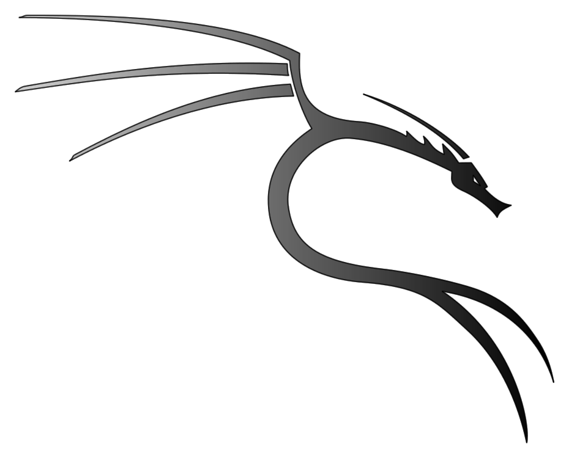

TIPOS DE SISTEMAS OPERACIONAIS
Kali linux
Kali Linux é uma distribuição GNU/Linux baseada no Debian, considerado o sucessor do Back Track. O projeto apresenta várias melhorias, além de mais aplicativos. É voltado principalmente para auditoria e segurança de computadores em geral. É desenvolvido e mantido pela Offensive Security Ltd KALI LINUX